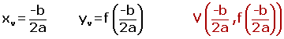

Resumen de funciones
Funciones constantes
y = n
La pendiente es 0.
La gráfica es una recta horizontal paralela a al eje de abscisas.
Rectas verticales
Las rectas paralelas al eje de ordenadas no son funciones, ya que un valor de x tiene infinitas imágenes y para que sea función sólo puede tener una. Son del tipo:
x = K
Función lineal
y = mx
m es la pendiente, que es la inclinación de la recta con respecto al eje de abscisas.
Su gráfica es una línea recta que pasa por el origen de coordenadas.
Función identidad
f(x) = x
Su gráfica es la bisectriz del primer y tercer cuadrante.
Función afín
y = mx + n
m es la pendiente. Dos rectas paralelas tienen la misma pendiente.
n es la ordenada en el origen y nos indica el punto de corte de la recta con el eje de ordenadas.
Función cuadrática
Son funciones polinómicas es de segundo grado, siendo su gráfica una parábola.
f(x) = ax² + bx +c
Representación gráfica de la parábola
1. Vértice

Por este punto pasa el eje de simetría de la parábola.
La ecuación del eje de simetría es:

2. Puntos de corte con el eje OX.
En el eje de abscisas la segunda coordenada es cero, por lo que tendremos:
ax² + bx +c = 0
Resolviendo la ecuación podemos obtener:
Dos puntos de corte: (x1, 0) y (x2, 0) si b² - 4ac > 0
Un punto de corte: (x1, 0) si b² - 4ac = 0
Ningún punto de corte si b² - 4ac < 0
3. Punto de corte con el eje OY.
En el eje de ordenadas la primera coordenada es cero, por lo que tendremos:
f(0)=a· 0² + b· 0 +c = c (0,c)
Funciones racionales
El criterio viene dado por un cociente entre polinomios:
El dominio lo forman todos los números reales excepto los valores de x que anulan el denominador.
Dentro de este tipo tenemos las funciones de proporcionalidad inversa de ecuación:
.
Funciones radicales
El criterio viene dado por la variable x bajo el signo radical.
Funciones definidas a trozos
Son funciones definidas por distintos criterios, según los intervalos que se consideren.
Funciones en valor absoluto
Las funciones en valor absoluto se transforman en funciones a trozos, sigiendo los siguientes pasos:
1. Se iguala a cero la función, sin el valor absoluto, y se calculan sus raíces.
2. Se forman intervalos con las raíces y se evalúa el signo de cada intervalo.
3. Definimos la función a trozos, teniendo en cuenta que en los intervalos donde la x es negativa se cambia el signo de la función.
4 Representamos la función resultante.
Función exponencial
Sea a un número real positivo. La función que a cada número real x le hace corresponder la potencia ax se llama función exponencial de base a y exponente x.
Funciones logarítmicas
La función logarítmica en base a es la función inversa de la exponencial en base a.